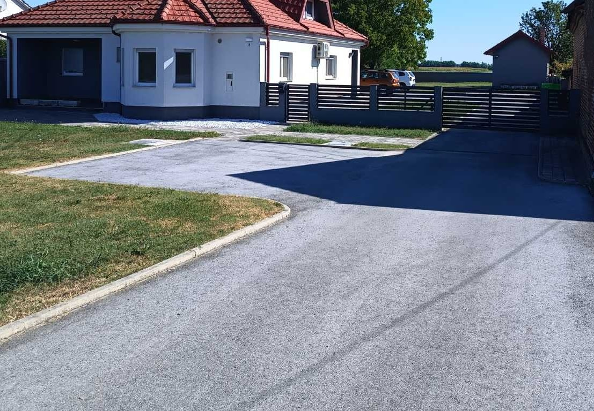
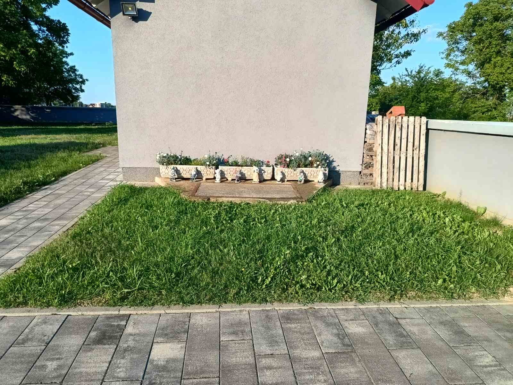
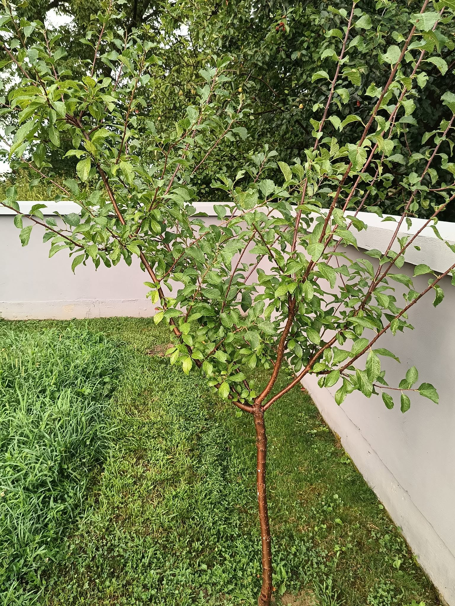
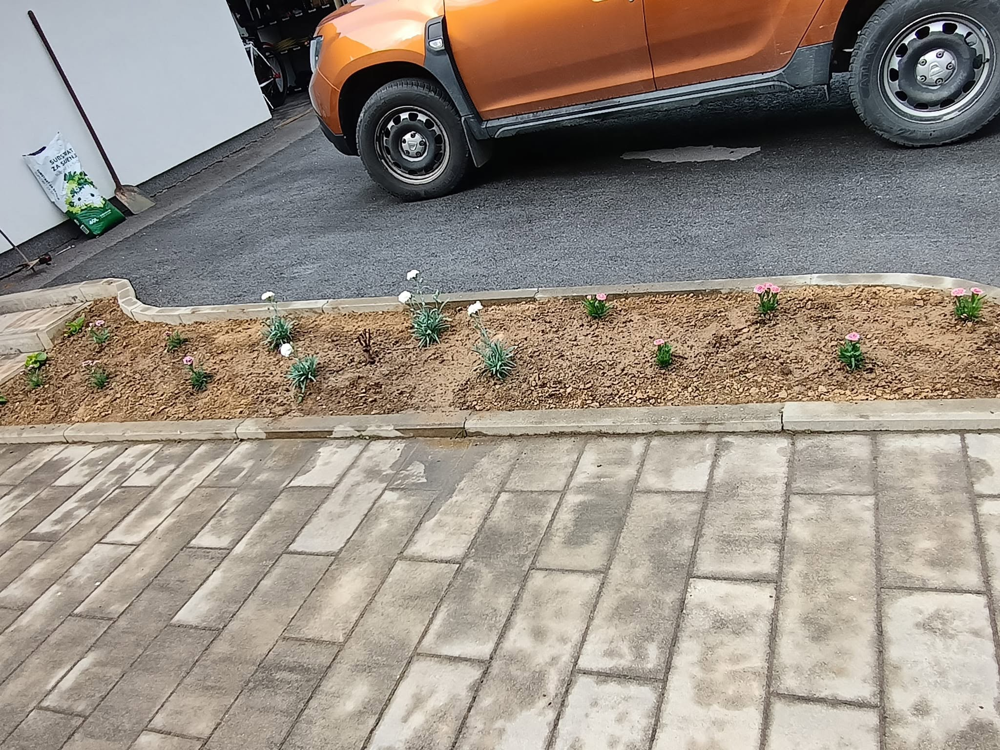
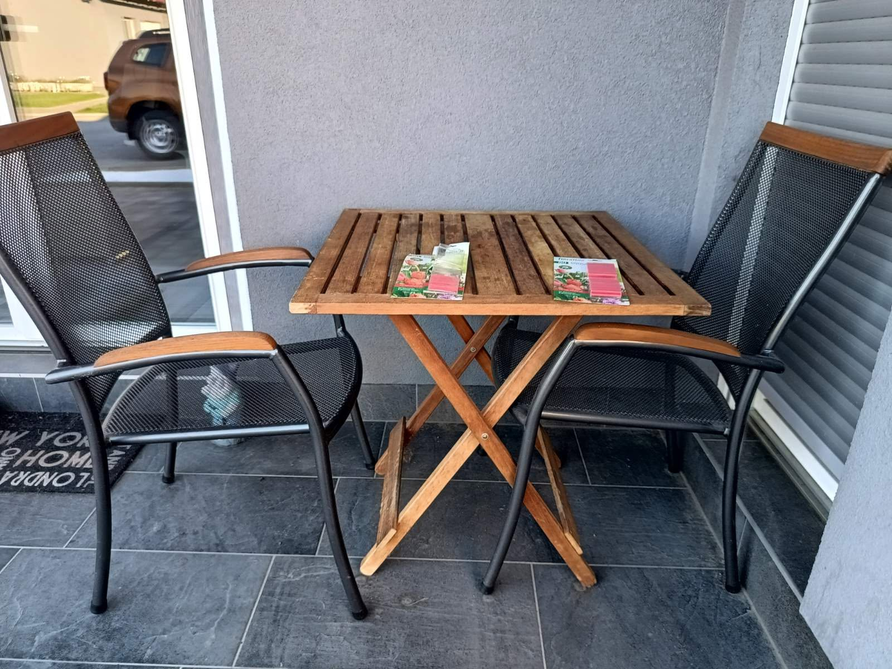

Okućnica
Uređen, ograđen i funkcionalan vanjski prostor ukupne veličine parcele 1.630 m².
Potpuno uređena okućnica
Okućnica je u potpunosti uređena i ograđena te pruža privatnost, sigurnost i ugodan prostor za boravak tijekom cijele godine.


Asfaltirani prilaz i parking
Asfaltirani dio okućnice omogućuje praktičan i siguran pristup te dovoljno prostora za parkiranje vozila.
Povišene vrtne gredice
Povišene vrtne gredice pružaju praktičan prostor za uzgoj vlastitog povrća i začinskog bilja.


Cvjetne oaze
Cvjetni detalji i uređene zelene površine daju okućnici toplinu, boju i poseban ugođaj.
Zelene površine i voćke
Prostrane zelene površine i posađene voćke stvaraju prirodan i ugodan ambijent za boravak na otvorenom.


Popločene staze i površine
Popločeni dijelovi povezuju kuću i okućnicu te omogućuju jednostavno i uredno korištenje vanjskog prostora.
Zen kutak za opuštanje
Miran kutak okućnice pruža prostor za predah, opuštanje i uživanje na otvorenom.
